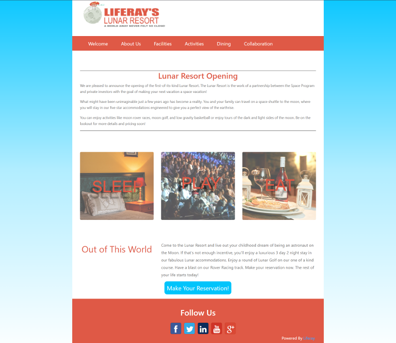

In this tutorial, you’ll upgrade the Lunar Resort theme developed in the
Liferay Portal 6.2 Developing a Liferay Theme
Learning Path to the new DXP version using the Liferay JS Theme Toolkit.
The Lunar Resort theme is similar to many Liferay Portal 6.2 themes, as it
extends the _styled theme,
adds configurable settings, and incorporates a responsive design that leverages
Font Awesome icons and Bootstrap. The theme ZIP file
contains its original source code.

Figure 1: The Lunar Resort example theme upgraded in this tutorial uses a clean, minimal design.
As you upgrade this theme, you’ll learn how to update metadata, theme templates, UI, and more using all the best practices and standards. Completing this tutorial prepares you for upgrading your own theme.